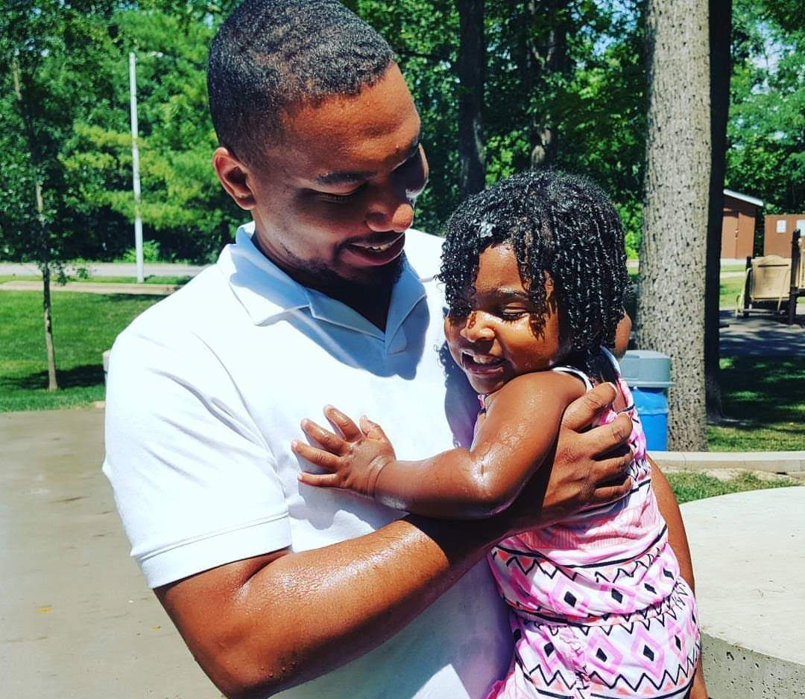
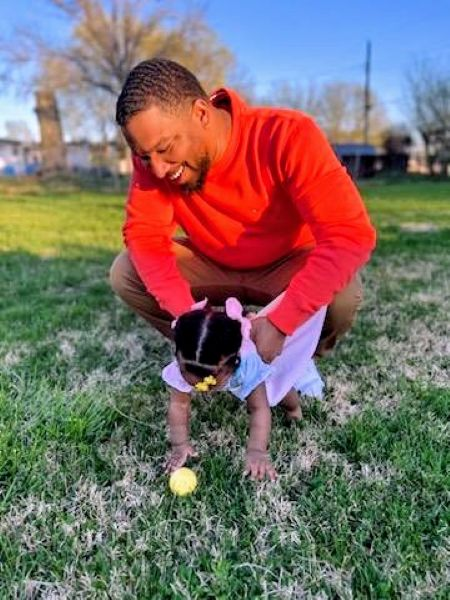

Demetrius Edwards


About
I’m someone who has learned to build forward momentum no matter what obstacles show up. My path hasn’t been linear — I’ve balanced work, personal responsibilities, and the challenge of breaking into tech without a traditional background. But those experiences shaped me into a problem solver who doesn’t fold under pressure. They taught me how to stay adaptable, how to learn quickly, and how to keep showing up even when the path isn’t clear. That resilience is the foundation of who I am and the energy I bring into every project.
Along the way, I’ve built a strong technical toolkit: full‑stack development with JavaScript, React, Node, and modern backend patterns; clean, modular coding habits; version control with Git; and the ability to break down complex problems into clear, testable steps. I’ve also gained a deeper understanding of how systems work — from logistics operations to user‑focused design — and how to communicate solutions in a way that makes sense to both technical and non‑technical people. My goal now is to use everything I’ve learned to create meaningful, scalable software and continue growing into the engineer I’m working hard to become.


Experience
An advanced full‑stack web development program with a strong emphasis on modern JavaScript ecosystems, front‑end engineering, back‑end API development, and professional software engineering practices. Gained hands‑on experience building interactive applications, consuming and creating APIs, and implementing secure, scalable full‑stack solutions.
Intensive full‑stack software development program focused on modern web technologies and industry‑standard engineering practices. Gained hands‑on experience building end‑to‑end applications, applying core programming concepts, and demonstrating professional communication and technical proficiency. Gained foundational knowledge and practical experience in JavaScript, React, Java, Spring Boot, and MySQL Workbench.
Transported critical medical supplies to hospitals across the metropolitan area, ensuring timely and secure deliveries. Logged shipment data using Ryder's digital tracking system, maintaining 98% accuracy in inventory and delivery logs. Commumicate with dispatch and clients to resolve delivery issues, demonstrating strong problem-solving skills and customer service. Adapt to changing logistics and weather conditions, consistently meeting tight delivery deadlines and maintaining a 95% on-time record.